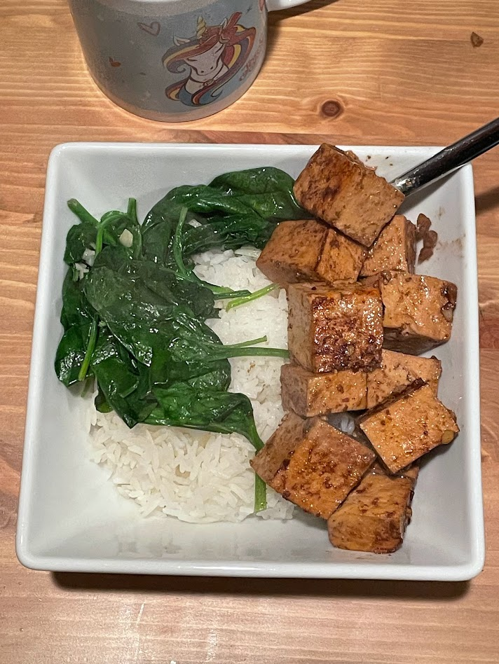

Baked tofu

Baked tofu served over rice, along with sautéed spinach. The nice color of the tofu comes from the soy sauce.
Ingredients
- Firm tofu
- Soy sauce
- Ground coriander
- Ginger
- Garlic
- Star anise
- Green onions (bias cut)
- Chili flakes (optional)
- Laoganma chili sauce (optional
- Miso paste (optional)
Instructions
Cut tofu into cubes and then marinate overnight with all the other ingredients. Take out the star anise and any large chunks of ginger, then throw in the oven around 350°F and stir occasionally until nicely cooked.
Serving suggestion
This goes great on top of rice, especially along with spinach, fried eggs, bean sprouts, and other side dishes like you'd put on bibimbap.
Notes
The reason this is baked instead of braised in a pan is because stirring tofu can cause it to crumble, which looks less appetizing than nice cubes of tofu